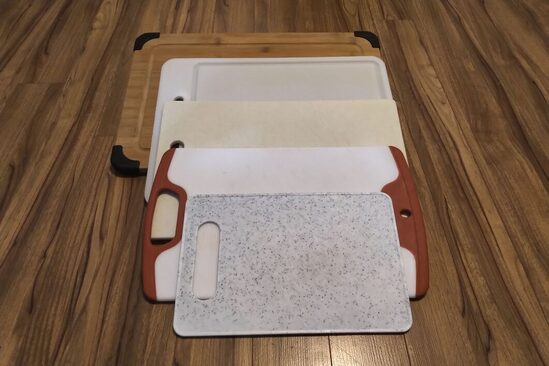

Cooking Tools
Knives are necessary to chop and prepare ingredients. Some prefer using different knives to cut and chop different things: a sharper knife may be better for cutting and cleaning meat, where a heavier cutting knife might make the task of chopping denser, thicker foods (eg root vegetables) a little easier. Some prefer and are accustomed to using a heavier cleaver to chop things, but not necessary if you do not have one. Comfort and ease of use, along with a sharp blade are important qualities to consider.
{kind=link}
 Cutting boards are necessary for providing a surface to chop things up. Much like using different knives, some prefer to designate certain cutting boards when cutting certain foods: using a separate cutting board for raw meat and another for cooked food or raw vegetables can help avoid cross-contamination. The material of the cutting board should also be considered when being used: plastic boards are easier to sanitize1 than wooden boards, but easier to cut grooves into, where bacteria can settle. The same can be said for wooden boards made of softer woods.
{kind=link}
Standard measuring cups and measuring spoons to portion out the right amount of ingredients.
{kind=link}
Bowls to hold the prepared ingredients, especially if the recipe calls for several to many different ingredients. Some ingredients will react differently to different materials, for example, using non-reactive material, such as ceramic or stainless steel, is ideal for certain acidic ingredients.
{kind=link}
A pot or a pan in which to heat and cook the ingredients, as well as boil or steam. In regards to pan or stir-frying, whether one is non-stick or not isn't a large concern, some cooking oil can be added to prevent sticking. Some prefer using a traditional wok for authenticity and its efficiency of cooking food at a high temperature in a shorter amount of time. For home cooking, from experience, I have found that standard cookware can suffice in capturing the desired flavour of Chinese cuisine.
{kind=link}
A spatula, wooden spoon, chopsticks, tongs or any other utensil to stir and handle food while cooking in the pot or pan. Depending on the recipe and ingredients that are being cooked, some utensils may be better suited for certain foods and recipes than others, depending on cooking temperature, fragility of ingredients and other factors.
{kind=link}
Other utensils and tools for specific use— rolling pins, to flatten dough meant for crusts and wrappers; strainers, for rinsing ingredients, as well as for sifting and straining ingredients into a finer consistency; graters, when a recipe calls for an ingredient to be shredded, grated or minced; citrus reamer, when the recipes requires citrus juice; meat tenderizer, to soften and tenderize meat, for better flavour absorption and cooking consistency; steamer, an alternative method of cooking, where food is placed in a ventilated rack atop boiling water and the heat from the steam cooks the food.
{kind=link}
Back to Top
Missing Something?
If you find yourself short of some utensils and cooking tools, a few places to consider looking: